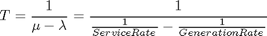

Avoiding Identical Seeds for Random Number Generators
Contents
Overview
Random number generator algorithms permit user-specified initial seed values for the generation of random numbers. If two random number generators use the same seed, then they may generate correlated sequences of "random" numbers even if the parameters of their distributions are different.
For a stochastic simulation, this can lead to undesirable correlation in the system, and perhaps even incorrect results.
This demo uses an M/M/1 queuing system to show that non-unique seeds can lead to incorrect results. It also describes how to avoid such effects. Refer to M/M/1 Queuing Demo for more information about M/M/1 queuing systems.
Queuing Example
This model shows a single-queue single-server system having a single source of traffic from the Time-Based Entity Generator.
oldFormat = get(0, 'format'); format long; modelname = 'sedemo_identicalseeds'; open_system(modelname);
Model Characteristics
The entity generation rate is a Poisson process with a mean of 2, while the service time is an exponential process with a mean of 1. The Time-Based Entity Generator and the Event-Based Random Number block currently have their seed values set to the same number.
Expected Theoretical Results
Queuing theory provides that the expected delay for an M/M/1 queuing system is as follows:

Simulating with Identical Seeds
Upon simulating the model, we see that the delay for the system has a mean of 1, which is different from the expected delay of 2.
sim(modelname);
Identical seeds detected for multiple random number generators in SimEvents blocks. The seed value 12345 is being used by the following blocks: sedemo_identicalseeds/Event-Based Random Number Highlight Randomize sedemo_identicalseeds/Time-Based Entity Generator Highlight Randomize To ensure uncorrelated data from random number generators, perform one of the following options: 1. Click on the Randomize links for each block to randomize the seed values 2. Click on the Randomize All link to randomize blocks with seeds presently set to 12345 3. Use the function SE_RANDOMIZESEEDS with appropriate input arguments 4. Manually change the block seeds You can disable this diagnostic by setting 'Identical seeds for random number generators' parameter to 'none' in the SimEvents Diagnostics tab of the Configuration Parameters.
Notice that a warning indicates that some blocks use identical seeds.
The function se_getseeds retrieves the seeds from a model or a subsystem for inspection as shown below.
mySeeds = se_getseeds(modelname)
mySeeds =
system: 'sedemo_identicalseeds'
seeds: [1x2 struct]
The return argument is a structure containing the seed parameters, which can be accessed for inspection as:
[{mySeeds.seeds.block}' {mySeeds.seeds.value}']
ans =
'Event-Based Random Number' [12345]
'Time-Based Entity Generator' [12345]
Randomizing Seeds
The function se_randomizeseeds randomizes the seeds for random number generators in a model or subsystem. This function ensures that the new seeds are unique.
se_randomizeseeds(modelname)
To verify that the seeds are now unique, you can use the function se_getseeds as follows.
mySeeds = se_getseeds(modelname);
[{mySeeds.seeds.block}' {mySeeds.seeds.value}']
ans =
'Event-Based Random Number' [1122]
'Time-Based Entity Generator' [9747]
Simulating with Unique Seeds
We now simulate the model that now contains unique seed values.
sim(modelname);
The empirical delay now conforms to the expected theoretical result.
format(oldFormat); clear modelname oldFormat mySeeds
Related Demos
Reference
[1] Kleinrock L., 'Queuing Systems. Volume 1: Theory', J. Wiley & Sons 1975, Canada
bdclose('sedemo_identicalseeds');